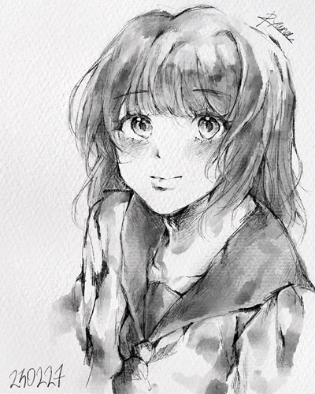
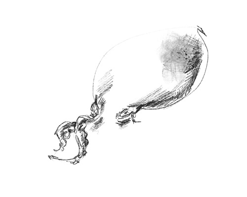
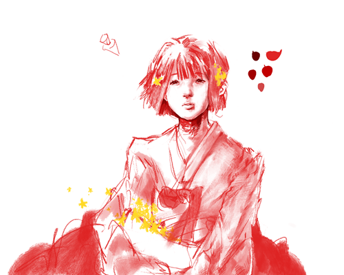
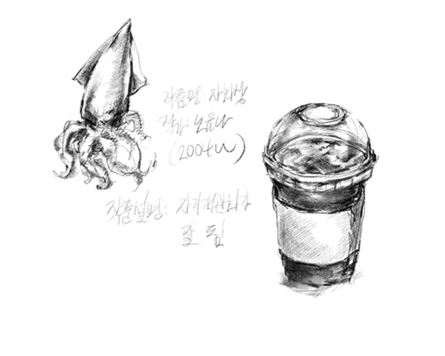

이스터 에그 시리즈
해당 웹페이지는 은밀하게 숨겨둔 공간이다!
이 공간을 찾아내기는 쉽지 않았을 텐데,
찾아내준 페이지 방문객들에게 경의와 감사를 표한다.
이 공간에서는 내가 남들에게 선뜻 보여주기에는 부끄러운 그림이나
미완성으로 남은 그림들,
또는 짤막한 낙서들을 게시해 보려 한다.

2023. 아이패드에 드로잉, 1668*2388px.
생각 없이 그림을 그리다 보면 캐주얼한 느낌의 그림체가 나온다.
원래 나의 그림체는 캐주얼 그림체에 가까웠으나,
그런 그림체를 선호하지는 않았던지라 현재의 그림체로 바꾸었다.
그렇기에 옛날 버릇이었던 캐주얼체가 무의식적으로 나오는 것 같다.
사실 나는 남들에게 그림을 보여줄 때
캐주얼한 그림체는 선뜻 보여주지 않는다.
평소 그리는 그림과 상반되는 느낌의 그림을 보여주는 것은
아직 살짝 부끄럽기 때문이다.

2023. 아이패드에 드로잉, 2388*1668px.
그림을 그리는 사람으로서 가장 많이 받는 요청은
'나 좀 그려줘.'이다.
나는 이 요청이 기분 나쁘지 않다.
대개 이러한 요청은 준수한 그림 실력을 가진 사람일수록
많이 듣는 말이기 때문이다.
어쨌거나 내 실력을 인정받은 거라고 생각하면 기분이 좋다.
그러나 기분이 좋은 것과 부담감은 별개의 문제다.
그만큼 요청자의 기대에 부응하는 그림을 그려야 하기 때문이다.
따라서 나는 '나 좀 그려줘.'라는 요청의 대답을 해산물 그림으로 대신한다.
해당 그림도 자신을 그려달라는 동기의 부탁에 대한 대답이었다.
악감정은 없다.

2023. 아이패드에 드로잉, 2388*1668px.
큰맘 먹고 그리기 시작한 작품이었지만
얼굴을 묘사하는 데에 힘을 너무 많이 써버려서
결국 미완성으로 남겨진 비운의 작품이다.
그림을 그리는 데 있어서 가장 중요한 것은 끈기와 인내심이라고 생각한다.
묘사하기 지루한 구간이어도
일단 묘사를 해놓고 나면 그림의 질이 대폭 상승한다.
완성작은 그러한 과정을 거쳐야만 나올 수 있는 것이다.
사실 끈기와 인내심은
인생을 살아가는 데 있어서 갖추어야 할 미덕이기도 하다.
잠깐 성찰의 시간을 가져 보자면,
나에겐 마무리 지어야만 했던 일들이 참 많았던 것 같다.

2023. 아이패드에 드로잉, 1668*2388px.
교양 과목 중 '미술치료'라는 과목이 있었다.
집중이 안 될 때마다 눈앞에 놓인 물건을 그려 보곤 했다.
첨언하자면 오징어가 눈앞에 놓인 물건은 아니었다.